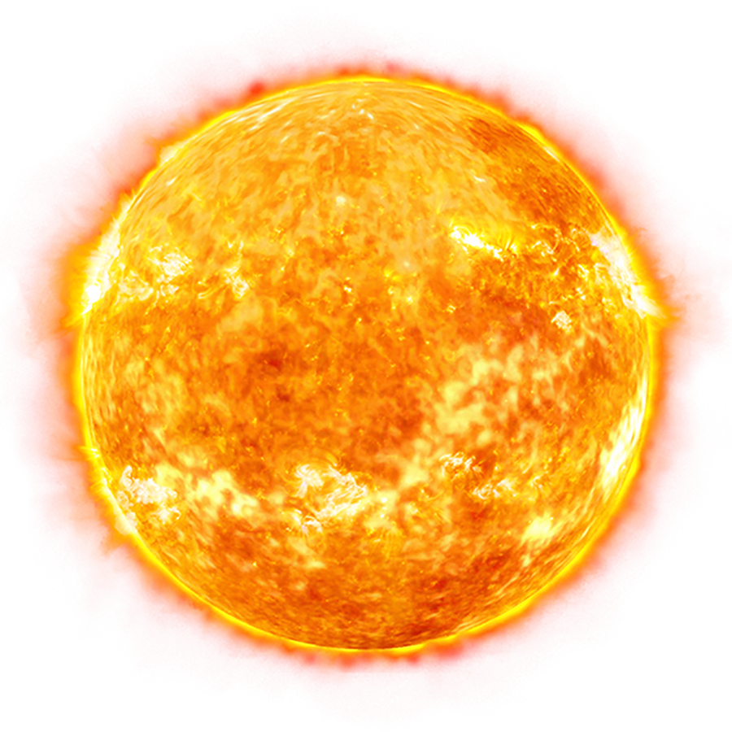

Słońce

-
Słońce ma średnicę 1 392 684 km. Jest około 109 razy większe niż Ziemia
a jego masa wynosi w przybliżeniu 333 tysięcy mas Ziemi. Słońce stanowi
około 99,86% masy Układu Słonecznego.
-
Około 3/4 masy Słońca stanowi wodór. Reszta przypada głównie na hel.
1,69% masy Słońca stanowią cięższe pierwiastki takie jak tlen, węgiel,
żelazo czy neon.
-
Słońce generuje energię przy pomocy fuzji jądrowej. W jego wnętrzu atomy
wodoru są łączone i w ten sposób powstaje hel. W ciągu sekundy na ten
cel nasza gwiazda zużywa około 620 milionów ton wodoru.
-
Słońce jest w połowie swojego życia. Ponieważ świeci nieprzerwanie od
ponad 4,6 miliarda lat zdołało już "zużyć" około połowy swojego zapasu
wodoru. Jako żółty karzeł będzie w stanie podtrzymywać proces fuzji
wodoru w hel jeszcze przez około 5 miliardów lat.
-
Plamy słoneczne to obszary o niższej temperaturze niż reszta Słońca. W
obrębie plam ma miejsce intensywna aktywność magnetyczna. Największe
plamy mogą mieć średnicę kilkudziesięciu tysięcy kilometrów (bywają więc
większe niż Ziemia).
Powrót na stronę główną